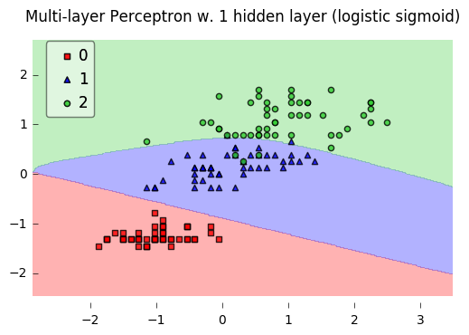

Neural Network - Multilayer Perceptron
Implementation of a multilayer perceptron, a feedforward artificial neural network.
from mlxtend.classifier import MultiLayerPerceptron
Overview
Although the code is fully working and can be used for common classification tasks, this implementation is not geared towards efficiency but clarity – the original code was written for demonstration purposes.
Basic Architecture

The neurons and represent the bias units (, ).
The th superscript denotes the th layer, and the jth subscripts stands for the index of the respective unit. For example, refers to the first activation unit after the bias unit (i.e., 2nd activation unit) in the 2nd layer (here: the hidden layer)
Each layer in a multi-layer perceptron, a directed graph, is fully connected to the next layer . We write the weight coefficient that connects the th unit in the th layer to the th unit in layer as .
For example, the weight coefficient that connects the units
would be written as .
Activation
In the current implementation, the activations of the hidden layer(s) are computed via the logistic (sigmoid) function

(For more details on the logistic function, please see classifier.LogisticRegression; a general overview of different activation function can be found here.)
Furthermore, the MLP uses the softmax function in the output layer, For more details on the logistic function, please see classifier.SoftmaxRegression.
References
- D. R. G. H. R. Williams and G. Hinton. Learning representations by back-propagating errors. Nature, pages 323–533, 1986.
- C. M. Bishop. Neural networks for pattern recognition. Oxford University Press, 1995.
- T. Hastie, J. Friedman, and R. Tibshirani. The Elements of Statistical Learning, Volume 2. Springer, 2009.
Example 1 - Classifying Iris Flowers
Load 2 features from Iris (petal length and petal width) for visualization purposes:
from mlxtend.data import iris_data
X, y = iris_data()
X = X[:, [0, 3]]
# standardize training data
X_std = (X - X.mean(axis=0)) / X.std(axis=0)
Train neural network for 3 output flower classes ('Setosa', 'Versicolor', 'Virginica'), regular gradient decent (minibatches=1), 30 hidden units, and no regularization.
Gradient Descent
Setting the minibatches to 1 will result in gradient descent training; please see Gradient Descent vs. Stochastic Gradient Descent for details.
from mlxtend.classifier import MultiLayerPerceptron as MLP
nn1 = MLP(hidden_layers=[50],
l2=0.00,
l1=0.0,
epochs=150,
eta=0.05,
momentum=0.1,
decrease_const=0.0,
minibatches=1,
random_seed=1,
print_progress=3)
nn1 = nn1.fit(X_std, y)
Iteration: 150/150 | Cost 0.06 | Elapsed: 0:00:00 | ETA: 0:00:00
from mlxtend.plotting import plot_decision_regions
import matplotlib.pyplot as plt
fig = plot_decision_regions(X=X_std, y=y, clf=nn1, legend=2)
plt.title('Multi-layer Perceptron w. 1 hidden layer (logistic sigmoid)')
plt.show()

import matplotlib.pyplot as plt
plt.plot(range(len(nn1.cost_)), nn1.cost_)
plt.ylabel('Cost')
plt.xlabel('Epochs')
plt.show()

print('Accuracy: %.2f%%' % (100 * nn1.score(X_std, y)))
Accuracy: 96.67%
Stochastic Gradient Descent
Setting minibatches to n_samples will result in stochastic gradient descent training; please see Gradient Descent vs. Stochastic Gradient Descent for details.
nn2 = MLP(hidden_layers=[50],
l2=0.00,
l1=0.0,
epochs=5,
eta=0.005,
momentum=0.1,
decrease_const=0.0,
minibatches=len(y),
random_seed=1,
print_progress=3)
nn2.fit(X_std, y)
plt.plot(range(len(nn2.cost_)), nn2.cost_)
plt.ylabel('Cost')
plt.xlabel('Epochs')
plt.show()
Iteration: 5/5 | Cost 0.11 | Elapsed: 00:00:00 | ETA: 00:00:00

Continue the training for 25 epochs...
nn2.epochs = 25
nn2 = nn2.fit(X_std, y)
Iteration: 25/25 | Cost 0.07 | Elapsed: 0:00:00 | ETA: 0:00:00
plt.plot(range(len(nn2.cost_)), nn2.cost_)
plt.ylabel('Cost')
plt.xlabel('Epochs')
plt.show()

Example 2 - Classifying Handwritten Digits from a 10% MNIST Subset
Load a 5000-sample subset of the MNIST dataset (please see data.loadlocal_mnist if you want to download and read in the complete MNIST dataset).
from mlxtend.data import mnist_data
from mlxtend.preprocessing import shuffle_arrays_unison
X, y = mnist_data()
X, y = shuffle_arrays_unison((X, y), random_seed=1)
X_train, y_train = X[:500], y[:500]
X_test, y_test = X[500:], y[500:]
Visualize a sample from the MNIST dataset to check if it was loaded correctly:
import matplotlib.pyplot as plt
def plot_digit(X, y, idx):
img = X[idx].reshape(28,28)
plt.imshow(img, cmap='Greys', interpolation='nearest')
plt.title('true label: %d' % y[idx])
plt.show()
plot_digit(X, y, 3500)

Standardize pixel values:
import numpy as np
from mlxtend.preprocessing import standardize
X_train_std, params = standardize(X_train,
columns=range(X_train.shape[1]),
return_params=True)
X_test_std = standardize(X_test,
columns=range(X_test.shape[1]),
params=params)
Initialize the neural network to recognize the 10 different digits (0-10) using 300 epochs and mini-batch learning.
nn1 = MLP(hidden_layers=[150],
l2=0.00,
l1=0.0,
epochs=100,
eta=0.005,
momentum=0.0,
decrease_const=0.0,
minibatches=100,
random_seed=1,
print_progress=3)
Learn the features while printing the progress to get an idea about how long it may take.
import matplotlib.pyplot as plt
nn1.fit(X_train_std, y_train)
plt.plot(range(len(nn1.cost_)), nn1.cost_)
plt.ylabel('Cost')
plt.xlabel('Epochs')
plt.show()
Iteration: 100/100 | Cost 0.01 | Elapsed: 0:00:17 | ETA: 0:00:00

print('Train Accuracy: %.2f%%' % (100 * nn1.score(X_train_std, y_train)))
print('Test Accuracy: %.2f%%' % (100 * nn1.score(X_test_std, y_test)))
Train Accuracy: 100.00%
Test Accuracy: 84.62%
Please note that this neural network has been trained on only 10% of the MNIST data for technical demonstration purposes, hence, the lousy predictive performance.
API
MultiLayerPerceptron(eta=0.5, epochs=50, hidden_layers=[50], n_classes=None, momentum=0.0, l1=0.0, l2=0.0, dropout=1.0, decrease_const=0.0, minibatches=1, random_seed=None, print_progress=0)
Multi-layer perceptron classifier with logistic sigmoid activations
Parameters
-
eta: float (default: 0.5)Learning rate (between 0.0 and 1.0)
-
epochs: int (default: 50)Passes over the training dataset. Prior to each epoch, the dataset is shuffled if
minibatches > 1to prevent cycles in stochastic gradient descent. -
hidden_layers: list (default: [50])Number of units per hidden layer. By default 50 units in the first hidden layer. At the moment only 1 hidden layer is supported
-
n_classes: int (default: None)A positive integer to declare the number of class labels if not all class labels are present in a partial training set. Gets the number of class labels automatically if None.
-
l1: float (default: 0.0)L1 regularization strength
-
l2: float (default: 0.0)L2 regularization strength
-
momentum: float (default: 0.0)Momentum constant. Factor multiplied with the gradient of the previous epoch t-1 to improve learning speed w(t) := w(t) - (grad(t) + momentum * grad(t-1))
-
decrease_const: float (default: 0.0)Decrease constant. Shrinks the learning rate after each epoch via eta / (1 + epoch*decrease_const)
-
minibatches: int (default: 1)Divide the training data into k minibatches for accelerated stochastic gradient descent learning. Gradient Descent Learning if
minibatches= 1 Stochastic Gradient Descent learning ifminibatches= len(y) Minibatch learning ifminibatches> 1 -
random_seed: int (default: None)Set random state for shuffling and initializing the weights.
-
print_progress: int (default: 0)Prints progress in fitting to stderr. 0: No output 1: Epochs elapsed and cost 2: 1 plus time elapsed 3: 2 plus estimated time until completion
Attributes
-
w_: 2d-array, shape=[n_features, n_classes]Weights after fitting.
-
b_: 1D-array, shape=[n_classes]Bias units after fitting.
-
cost_: listList of floats; the mean categorical cross entropy cost after each epoch.
Methods
fit(X, y, init_params=True)
Learn model from training data.
Parameters
-
X: {array-like, sparse matrix}, shape = [n_samples, n_features]Training vectors, where n_samples is the number of samples and n_features is the number of features.
-
y: array-like, shape = [n_samples]Target values.
-
init_params: bool (default: True)Re-initializes model parameters prior to fitting. Set False to continue training with weights from a previous model fitting.
Returns
self: object
predict(X)
Predict targets from X.
Parameters
-
X: {array-like, sparse matrix}, shape = [n_samples, n_features]Training vectors, where n_samples is the number of samples and n_features is the number of features.
Returns
-
target_values: array-like, shape = [n_samples]Predicted target values.
predict_proba(X)
Predict class probabilities of X from the net input.
Parameters
-
X: {array-like, sparse matrix}, shape = [n_samples, n_features]Training vectors, where n_samples is the number of samples and n_features is the number of features.
Returns
Class probabilties: array-like, shape= [n_samples, n_classes]
score(X, y)
Compute the prediction accuracy
Parameters
-
X: {array-like, sparse matrix}, shape = [n_samples, n_features]Training vectors, where n_samples is the number of samples and n_features is the number of features.
-
y: array-like, shape = [n_samples]Target values (true class labels).
Returns
-
acc: floatThe prediction accuracy as a float between 0.0 and 1.0 (perfect score).